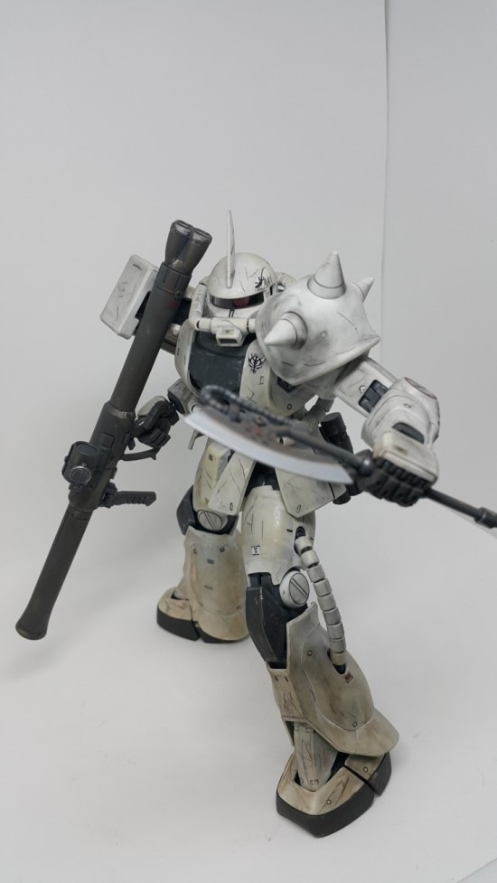

중학생 조카가 불쑥 “요새는 건프라 안 해?” 하고 묻는다. 그러곤 “왜 내가 대여섯살 때 건프라를 줬냐?”고 따지듯 묻는다. 무슨 소린가 싶어 이유를 물었다. 조카는 5~6살 때부터 나에게서 수많은 건프라 완성품을 받았다. 조카 손에 들린 나의 건프라들은 팔다리 하나쯤 없어지거나, 머리와 몸통이 분리되고, 무기는 아예 사라져갔다. 시간이 흘러 조카는 이제 건프라에 재미를 들이기 시작했고, 그의 꿈은 건프라 엠지(MG·숙련자용) 등급을 살 수 있게 용돈이 풍족해지는 것이다. “아무것도 모르는 어린 나에게 건프라를 건네준 건 고모의 실수고, 그 건프라를 망가뜨린 내 행동은 만행”이라고 말하는 조카를 보고 한참 웃었다.
오래전 나는 자기소개서의 취미란에 ‘건프라’를 적어 넣던 사람이었다.별스러운 일도 아니지만 ‘여성’이라는 나의 성별 때문에 대부분의 사람들이 의아하게 여기던 취미였다. 하긴 처음 건프라를 시작하던 그때부터 지금까지 내 주변에서 건프라를 하는 ‘여자 사람’은 만나보지 못했으니 말이다.
21세기를 맞이할 즈음 건프라를 처음 접하게 된 건 남자친구의 권유 때문이었다. 자주 이용하는 버스정류장 근처에 프라모델 매장이 있었다. 어느날 그는 “한번 들어가보자”고 했고, 나올 때 내 손엔 건프라 하나가 들려 있었다. 이등신으로 변형한 초보자용 에스디(SD) 건프라를 완성하고 나니 정말 귀여웠다. 조립할 때 손톱깎이로 잘라낸 조각들이 딸깍 소리를 내며 맞춰지던 그 순간이 좋았다. 곧 다음 단계인 에이치지(HG) 등급 건프라를 사게 된 건 자연스러운 일이었다.